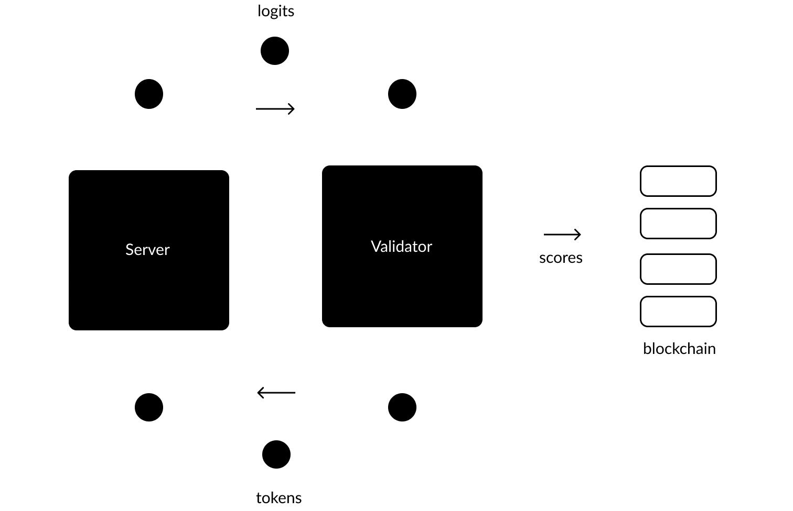

Introduction
Bittensor is an open-source protocol that powers a scalable, decentralized neural network. The system is designed to incentivize the production of machine intelligence by training models within a blockchain infrastructure and rewarding performance with a custom digital currency.
The network is composed of several thousand nodes, each containing a machine learning model. All nodes are assigned the task of parsing a massive collection of text data, working collaboratively to extract semantic meaning. By way of a consensus mechanism, the system is designed to reward the most value-producing nodes, such that the digital token reaches equivalency with the quality and quantity of representational knowledge in the system.
Ultimately, our vision is to create a pure market for artificial intelligence.
The Protocol
There are two types of nodes that comprise the network: Servers and Validators. The Validators are tasked with “validating” the performance of the Servers, prompting them for information and assessing them according to their responses. These assessments are then relayed to the network blockchain, Nakamoto, where currency is distributed. Servers are tasked with optimizing their responses so that they can compete with other Servers in the system for positive assessments, and therefore currency. The best preforming Servers will receive a larger portion of the limited supply of minted Tao.
Each validation process begins when a Validator locates a Server in the network and sends its input in the form of tokenized text, also referred to as tokens. The Servers will then respond with logits, which represent their best attempt at next token prediction (NTP). This constitutes the central value-producing activity of the network. The Validator will then score each Server according to their response, using a series of information-based processes and game theoretic strategies to determine the usefulness of the information received.
The Validators are able to do this efficiently because they have the data on hand that they are serving, they already have the “answer” needed to properly assess the predicative responses they are recieving. 
The Consensus Mechanism
The distribution of Tao is not linear and is not determined by a single transaction. Our consensus mechanism is designed so that nodes that are valuable in the network recieve more reward at an increasing rate. Once individual scores have been determined, the network blockchain uses a consensus algorithm to reach a common agreement over who the most valuable participants in the system are in order to reward them accordingly, while deterring the activity of malicious nodes in the network.
Servers are rewarded based on their performance in individual instances of knowledge production, and in addition, they must prove useful to the majority of Validators in the network to optimize their earnings. Validators, on the other hand, are incentivized to collaborate with highly valuable Servers in the system who are also trusted by the majority through a bonding mechanism and a limitation in the supply of scores they are able to give.
Servers receive two separate assessments from Validators that are combined to determine their Tao inflation, thus acting as an incentive.
-
The first assessment is the consensus score, which is determined by the number of approval votes given by Validators (trust). This score is not earned in a linear fashion, as Validators with more stake (Tao) are able to distribute a greater number of votes. The score is also regularized by a sigmoid function: if less than 51% of the votes a Server receives are positive, the score is reduced exponentially, if more than 51% are positive, it is likewise inflated.
-
This consensus score is then combined with the rank - numerical determinant of representational knowledge value - achieved to determine the Server's Tao inflation. Again, this score (rank) is skewed: it is a combination of weights set by the validator and the stake of that validator.
Validators, as well, are subject to a set of conditions to incentivize right conduct in the system.
-
The first of these is the “bonding mechanism”: when Validators rank a given Server, they simultaneously purchase equity in that node, and receive inflation proportional to this. Because of the consensus mechanism previously described, Validators benefit from distributing their highest scores to Servers who are likely to be scored highly by other Validators as well - “trusted” Servers.
-
In addition, Validators are limited in the number and size of scores they are allowed to distribute, and so must choose wisely where their investment is allocated: they must only choose the best and the brightest.
Governance and Responsibility
Shadowing this project is the Opentensor Foundation, a globally distributed, non-profit organization that is responsible for navigating the off-chain aspects of Bittensor. Ownership of the Foundation is also shared amongst network contributors through a system of tokenization - where donations of Tao confer ownership and decision-making power.
Getting started
This section will guide you through the basic steps necessary to run a miner in the Bittensor network. Considering the rapid expansion of - and competition within - the network since its launch in November 2021, registration difficulty is constantly shifting and there is no guarantee that the same calibre of hardware will always be sufficient. As of now, the bare minimum hardware requirement to register in the network is:
- 16 dedicated CPU cores
- 32GB of RAM
- 100GB of disk space
- Ubuntu LTS releases or Macintosh
- A good and stable internet connection
as of July 25, 2022
Installing Bittensor
To begin, paste this script into your macOS Terminal or Linux shell prompt:
/bin/bash -c "$(curl -fsSL https://raw.githubusercontent.com/opentensor/bittensor/master/scripts/install.sh)"
You will be notified when the installation is complete, and the next step will be to create your keys.
Creating your keys
Creating your coldkey
Your coldkey remains on your device and holds your "cold storage". Currency in cold storage cannot be used for immediate activity in the network
btcli new_coldkey
You will be prompted to name your wallet (which refers to the coldkey in this instance) and choose a password, before being provided with a unique mnemonic device. Record this information privately and securely.
Creating your hotkey
This key contains your "hot storage": currency that can be used for immediate activity in the network. Your coldkey can have multiple hotkeys attached to it, while each hotkey can only be associated with one coldkey.
btcli new_hotkey
You will be prompted to complete the same steps as with the last key, in addition to specifying which coldkey you would like to connect your hotkey to.
Running a miner
With your keys created, you can now run your miner.
btcli run
You will be immediately prompted to:
Enter a network
To immediately gain access to Subtensor - our network blockchain - choose “nakamoto.” Nakamoto is useful for quick connections to the network like checking your wallet balance, however it is not reliable for mining. For seriuous miners we recommend running an instance of Subtensor locally in order to maximize speed and connection. Should you be running Subtensor locally, choose “local.”
To familiarize yourself with the protocol without mining, choose our test network, Nobunaga.
Enter your wallet
Enter the name of your coldkey and hotkey credentials. note: your will need a separate hotkey for each miner you run.
Choosing a miner
From here, you may choose: template_server/core_validator/advanced_server
Your miner is now running and solving the proof of work to register to the network. Registering on the network can take some time, depending on the calibre of your hardware. Please note that registration is CPU intensive, and GPU registration is not currently supported. Generally the more CPU power you have, the faster your will miner will become registered.
Once the proof of work is solved, your miner will automatically begin mining Tao.
Should your miner become deregistered, your miner will automatically begin the registration process again.
Mining Tao is highly competitive so that only the best miners outfitted with the best models will do well. The challenge of optimizing your miner is the responsibility of the user.
Running locally - Subtensor
Subtensor is our network blockchain and keeps a record of every transaction that occurs. A new block is created and recorded every 12 seconds - or "blockstep" - at which time a new round of Tao is distributed.
By connecting to Nakamoto, you automatically gain access to Subtensor. Running a Subtensor instance locally, however, will ensure a faster and more consistent experience in the case that the network is compromised or slowed by high traffic. It is therefore highly recommended to run Subtensor locally for serious miners.
Running Subtensor
- Prepare your system by updating outdated packages in your system, and installing the newest available ones. You can do this in two commands.
sudo apt-get update
sudo apt-get upgrade
- Install an application package software to maintain Subtensor locally. Bittensor mining is very computationally complex, and software like this will help allocate appropriate resources. We recommend using Docker. For more information, follow this link.
Run the following commands:
curl -fsSL https://get.docker.com -o get-docker.sh
sudo sh get-docker.sh
sudo curl -L "https://github.com/docker/compose/releases/download/1.29.2/docker-compose-$(uname -s)-$(uname -m)" -o /usr/local/bin/docker-compose
sudo chmod +x /usr/local/bin/docker-compose
- Install Subtensor
git clone https://github.com/opentensor/subtensor.git ~/.bittensor/subtensor
- Connect with the Subtensor directory
cd ~/.bittensor/subtensor
- Pull the latest Subtensor image
docker pull opentensorfdn/subtensor
- Run Subtensor inside of your application package software
sudo docker-compose up -d
- Check that Subtensor is fully synced
docker logs --since=1h node-subtensor 2>&1 | grep "best"
Here is an example of a synced copy of Subtensor:
/node-subtensor | 2022-04-27 01:32:22 Accepted a new tcp connection from 172.22.0.1:50564.
node-subtensor | 2022-04-27 01:32:22 Accepted a new tcp connection from 172.22.0.1:50568.
node-subtensor | 2022-04-27 01:32:22 Accepted a new tcp connection from 172.22.0.1:50572.
node-subtensor | 2022-04-27 01:32:22 Accepted a new tcp connection from 172.22.0.1:50576.
node-subtensor | 2022-04-27 01:32:22 Accepted a new tcp connection from 172.22.0.1:50580.
node-subtensor | 2022-04-27 01:32:22 Accepted a new tcp connection from 172.22.0.1:50584.
node-subtensor | 2022-04-27 01:32:22 Accepted a new tcp connection from 172.22.0.1:50588.
node-subtensor | 2022-04-27 01:32:22 Accepted a new tcp connection from 172.22.0.1:50592.
node-subtensor | 2022-04-27 01:32:22 Accepted a new tcp connection from 172.22.0.1:50596.
node-subtensor | 2022-04-27 01:32:22 Accepted a new tcp connection from 172.22.0.1:50600.
node-subtensor | 2022-04-27 01:32:22 Accepted a new tcp connection from 172.22.0.1:50604.
node-subtensor | 2022-04-27 01:32:22 Accepted a new tcp connection from 172.22.0.1:50608.
node-subtensor | 2022-04-27 01:32:22 Accepted a new tcp connection from 172.22.0.1:50612.
node-subtensor | 2022-04-27 01:32:22 Accepted a new tcp connection from 172.22.0.1:50616.
In case your Subtensor goes down, here is the command to restart it:
# quick restart
cd ~/.bittensor/subtensor && \
/usr/local/bin/docker-compose down && \
/usr/local/bin/docker-compose up -d
# full restart
cd ~/.bittensor/subtensor && \
/usr/local/bin/docker-compose down && \
docker system prune -a -f && \
git -C ~/.bittensor/subtensor pull origin master && \
docker pull opentensorfdn/subtensor && \
/usr/local/bin/docker-compose up -d
Lastly, here are the steps to ensure both Bittensor and Subtensor are up to date.
Update Bittensor:
git -C ~/.bittensor/bittensor pull origin master
python3 -m pip install -e ~/.bittensor/bittensor
Update Subtensor:
#Bring Subtensor down
sudo docker-compose down
#Connect to directory
cd ~/.bittensor/subtensor
#update Subtensor
sudo git pull
#Bring Subtensor back up
sudo docker-compose up -d
Basic btcli
Before you begin customizing your miner to optimize your currency accrual, it is useful to familiarize yourself with ourbtcli commands. Btcli is a command line interface to interact with Bittensor, and commands are used to monitor miner performance, transfer Tao, regenerate keys, and run a miner.
Running a miner
btcli run
Monitoring
For an overview of all possible btcli commands, enter:
btcli help
Both the "overview" and "inspect" commands are used to monitor your miner performance:
btcli overview
btcli overview will display the specifics of your progress in the network, and includes your UID, state (active or inactive), stake, rank, trust, consensus, incentive, dividends, and emission. For more information about these performance indicators, refer to the "Consensus Mechanism" section.
btcli inspect
btcli inspect will not display such a detailed analysis of your performance, but will allow you to see your key identifiers, fingerprints, network, balance, stake, and emission.
For a complete list of all created keys, run:
btcli list
Transferring Tao
The "unstake" command will transfer Tao from a hotkey to your coldkey.
btcli unstake
The "stake" command will transfer Tao from your coldkey to a hotkey associated.
btcli stake
To expedite longer staking and unstaking operations, you can string these flags to btcli stake and btcli unstake:
#stake or unstake from all hotkeys
--wallet.all_hotkeys
#stake or unstake from a specific set of hotkeys
--wallet.hotkeys <>
#stake or unstake from all hotkeys while exluding a specific set of hotkeys
--wallet.exclude_hotkeys <>
#stake or unstake to a specific amount of stake on a hotkey
--max_stake <>
This command moves Tao between coldkeys. A .125 tao burn fee is applied.
btcli transfer
Key regeneration
If you lose access to your keys, they can be easily regenerated with the unique mnemonic device you were provided with upon initial creation.
btcli regen_coldkey
btcli regen_hotkey
Preparing your miner
Once your miner is registered in the network and you have Subtensor running locally, your basic setup is complete. Your miner will begin processing data, generating value for the network, and accruing Tao.
This area of the documentation will guide you through the basic customizations that can be made to your miner with flags in order to set your miner up for success in the network. Pair these flags with calls to btcli or any other mining start command.
You may also configure your miner through a config file or environment variables. See Methods of Configuration and Configuration Settings for more.
Choosing your hardware
While the current network parameters typically do not demand the computational power of a GPU, larger models may.
To run with GPU or CPU:
--neuron.device <cuda | cpu>
Choosing a network
This argument specifies which instance of Subtensor you will connect to: a local copy, the public Nakamoto copy, or the test network Nobunaga.
--subtensor.network <local | nakamoto | nobunaga>
You can also select a network endpoint:
--subtensor.chain_endpoint <>
Specifying a wallet
Every running miner must be connected to a registered hotkey. This code will specify which coldkey (wallet) you wanted to use, as well as the corresponding hotkey.
--wallet.name <>
--wallet.hotkey <>
Specifying a port
Specifying a port to which to access the network is important because you will benefit from entering a low traffic area. This will generally be one above 1024 and below 65535. Each miner needs to have a unique port, so if you have two miners running on the same machine, they will require two separate ports.
The miner communicates with the network through its communication endpoint, the axon. This is where the argument is made.
--axon.port <>
ex.
--axon.port 8090
Restarting you miner
Only use this argument when if wish to restart your training from the beginning. This will reset all training progress.
--neuron.restart
Different ways to start a miner
This is for advanced or power users of Bittensor
Sometimes you may want to create your own validator or your own server, in which case btcli will not work as it is pointed at specific files within the Bittensor repository. The following commands demonstrate how to run your own custom script along with the same Bittensor flags. Note that the path of the script that the command examples are using are the same ones that btcli uses currently.
python3 -u ~/.bittensor/bittensor/bittensor/_neuron/text/<template_server | core_validator | advanced_server>/main.py --no_prompt --subtensor.network local --wallet.name <> --wallet.hotkey <>
Process managers like PM2 and TMUX are another option, however since they are not a part of Bittensor, they will not be a part of this documentation.
Customizing your miner - Server
When you first enter the network, you will likely be running a Server. Until you have accrued ~1000 Tao, serving is the only way to mine a significant amount of Tao, and the ultimate goal is to upgrade, customize and design your model in such a way as to optimize this.
Choosing a model
By default, your miner is outfitted with the gpt2 model. While the ultimate goals is to upgrade, customize, and design your own model from scratch, choosing one from Hugging Face is a good place to start.
Attach these arguments to the end of a btcli call or mining start command.
The argument that downloads a Hugging Face model is:
--neuron.model_name <>
For example, if you want to run Eleuther AI's gpt-j-6B model:
--neuron.model_name EleutherAI/gpt-j-6B
Choose advanced_server when using a pretrained model.
As expected, the larger the model is, the more computational resources it will need to run smoothly on the network.
View Hugging Face for more options or finetune your own!
Choosing peers
By associating only with high-stake Validators, Servers are able to optimize their inflation. Using the "blacklist" argument, you can decide the minimum stake a Validator must have to send a forward request.
--neuron.blacklist.stake.forward <>
Padding parameter
The padding parameter adjusts the embedding dimensions for your model to match the network dimension, which is currently set to 1024. By default, the padding is turned on, however, while this is useful for smaller models, it might be useful to turn it off for larger models. This command only works for advanced servers.
--neuron.padding false
Allocating Tao
The more Tao you have staked to a hotkey, the more protection that hotkey has from getting deregistered in the network. However, Tao staked in your hotkey, as a Server, does not increase your dividends.
Preventing timeouts
Optimizing request speed is essential for mining. The faster your Server can process Validator requests, the better its earnings will be. A Server must be able to process a request within one blockstep, or else a timeout will occur. If this happens, you will need to improve your connection, or your hardware. As a server, you are only concerned with forward requests, and timeouts here mean your Server cannot computationally keep up with the demands of the network.
View your timeouts on your "logs" that pop up the moment your miner starts to run when using:
--logging.debug
This will show you requests on the axon and the dendrite as well as weights set on the chain.
Customizing your miner - Validator
The Core Validator finetunes on the bittensor network with a mixture of experts model and shapely scoring. The Validator's main jobs are to identify important/useful peers in the network and to correctly weight them. To achieve this, the Validator will send requests to different peers on the network and evaluate their responses.
Running a Validator becomes beneficial only once you have accrued a significant amount of Tao. This is due to the bonding matrix: Validators accrue currency in proportion to their stake due to the existence of dividends. Validators typically need at least ~1000 Tao to stay registered on the network, however the minimum Validator stake is subject to change.
In addition, Validators are less sensitive to disconnection compared to Servers, who's incentive will begin falling within 20 minutes of disconnection (100 blocks). Validators, however, will only become inactive after ~5000 blocks.
Running a Validator
Any registered hotkey can be used to run a Validator, and it is as simple as running this command:
btcli run
Choose core_validator
Optionally attach the following arguments to the end of a btcli call or mining start command to customize your Validator's parameters.
Optimizing traffic
There are 4096 nodes available in the network, but each Validator can only query a section of the network at a time. By using the "nucleus.topk" argument, however, you can changes the number of peers that your Validator will query per remote forward call to the network. By default, this "traffic" dimension is set to 20, but with good hardware, increasing this dimension can improve your earnings, though it is recommended not to set higher than 50.
--nucleus.topk <>
Optimizing layers
This is another way to increase power - and therefore earning potential - given adequate hardware: increase the layers of your model.
--nucleus.nlayers <>
Optimizing Importance
This metric determines how "risk averse" your Validator will be in choosing who to send requests to. With a high importance parameter, validators will query more peers, without regard for how known they are to the network. With a low importance parameter, validators will take the safest route - querying mostly known peers in the system. This parameter is set to 3 by default, and it is not recommended to set above 10.
--nucleus.importance <>
Staking Tao
If you are running a Validator, the more Tao you have staked in your hotkey, the more inflation through dividends you will earn. Refer to Wallet to see the commands for transferring and staking Tao.
CLM Model Tuning
Note: This script was adapted from Hugging Face's Transformers/language-modeling code.
Welcome to the CLM Model Tuning walkthrough. This section will guide you through how to install and use our guide to fine-tune your models.
Language model tuning preface
Fine-tuning the library models for language modeling on a text dataset for models like GPT and GPT-2. Causal languages like this are trained or fine-tuned using a causal language modeling (CLM) loss.
In theory, serving a tuned model can increase incentive and earnings on the Bittensor network. However this depends on many factors: the choice of model, the data used for tuning, and (to a lesser extent), the hyperparameters used for tuning itself. This is not a silver bullet that will immediately guarantee higher earnings, but differences will be more pronounced once the Synapse update is released (time of writing: July 25, 2022).
In the following examples, we will run on datasets hosted on Bittensor's IPFS Genesis Dataset, on Hugging Face's dataset hub, or with your own text files.
For a full list of models that will work with this script, refer to this link.
Installation and requirements
This code assumes you have Bittensor already installed on your machine and is meant to be run entirely separately. Some basic linux command line knowledge is assumed, but this guide should provide a good starting point to navigate and move around files, directories, etc.
To start, clone this repository:
git clone https://github.com/opentensor/clm_model_tuning
Install the additional packages for this script:
pip install -r requirements.txt
All of the following commands assume you are working from this folder:
cd clm_model_tuning
Fine-tuning on Bittensor
By default, this script will fine-tune GPT2 for Bittensor's mountain dataset. Running:
python3 finetune_using_clm.py
will tune gpt2 with Bittensor's dataset and save the output to tuned-model.
To change the model you are tuning to, e.g. distilgpt2, run:
python3 finetune_using_clm.py model.name=distilgpt2
A full list of models that can be trained by this script are available on Hugging Face.
Fine-tuning on Hugging Face datasets
Any text dataset on Hugging Face should work by default by overriding the dataset.name and dataset.config parameters:
python3 finetune_using_clm.py dataset.name=wikitext dataset.config_name=wikitext-103-v1
Fine-tuning on your own data
If you have a .txt file saved locally, you can override dataset.name:
python3 finetune_using_clm.py dataset.name=./path/to/your/data.txt
Note if using your own data, you may have many short sentences and the block size may be insufficient for reasonable performance. It's recommended you pass the flag dataset.concatenate_raw=true to give the model more context when training. This will reduce the number of batches.
Configuring training parameters
All configurable parameters are visible and documented in conf/config.yaml. The defaults are chosen for quick training and not tuned; you will need to experiment and adjust these.
Note: The above parameters are the only commands you can override with this script. That is, you may not pass flags you would normally use when running btcli (i.e. --neuron.device will not work). If there is a flag you wish to modify feel free to submit a feature request.
To view the changeable parameters, open conf/config.yaml in whatever text editor you prefer, or use cat conf/config.yaml to view them.
You do not need to edit this file to change the parameters; they may be overridden when you call this script. e.g., if you wish to change the model to distilgpt2, and the output directory to distilgpt-tuned, you would run:
python3 finetune_using_clm.py model.name=distilgpt2 output_dir=distilgpt-tuned
Note the nested structure in the config, since model is above name in conf.yaml, you must override model.name when invoking the command.
Serving custom models on Bittensor
To serve your tuned model on Bittensor, just override neuron.model_name with the path to your tuned model:
btcli run ..... --neuron.model_name=/home/{YOUR_USENAME}/clm_model_tuning/tuned-model
Limitations and warnings
Early stopping is not yet supported. Many features are implemented but not thoroughly tested, if you encounter an issue, reach out on discord or (preferably) create an issue on this github page.
Configuring a miner
There are three ways to configure your miner:
- Command line arguments
- Configuration file
- Environment variables
Command line arguments take the highest priority with environmental variables being the lowest.
- Command Line —> Config —> Environment Variables
Command line arguments
Command line arguments take the form of flags and can be strung to btcli calls or your miner run command.
For example, specify which port to use:
btcli run --axon.port <>
Full list of command line arguments
Configuration file
Another way to configure your miner is through the configuration file. To call upon a configuration file, pass:
--congig <path_to_congiguration_file>
# e.g.
btcli run --config my_config_directory/my_custom_config_file.txt
Refer to sample configuration files
Environment variables
The final way to configure a miner is through environment variables.
All environment variables have the same structure:
BT_<object name>_<parameter name>
To change an environment variable:
export BT_VARIABLE_I_WISH_TO_CHANGE=<>
For example, if you wanted to specify the default port to 3000:
export BT_AXON_PORT=3000
Full list of environment variables
The Genesis Dataset
The Genesis Dataset is a Bittensor’s current language modeling dataset consisting of a set of smaller datasets combined together. Currently, it contains 1500 GiB of unlabeled text.
Servers in Bittensor are valdiated for their ability to understand the text contained in the Genesis Dataset. To do this, Validators query Servers who must produce embeddings and token predictons in response. Scores derived from these responses determine the incentives Servers see, thus guiding the network to understand the dataset better.
Storage
In order to ensure global access and make the network robust to single points of failure, Genesis is stored on The InterPlanetary File System (IPFS) as a set of small chunks, files no larger than 1Mb, each containing a small sample of the larger dataset. These small chunks are organized into a set of 22 datasets each with a standard data format, for instance, Arxiv articles or Github code.
Querying
Every file on Genesis can be accessed via its unique hash. These can be queried directly using a tool like Curl and the hash of the file. For instance, we can query an individual file like so.
Command:
curl -X POST "http://ipfs.opentensor.ai/api/v0/object/get?arg=Qme2dawBzozFGtKWX73fh5fmB8NJD7TRS2XSWKhJB4WbJd"
Output:
"Data": Right now, American protest music sounds like\nthis.\n...we don’t believe you, cuz we the people...\n...a million dollar loan.
...
Orginization
Genesis is organized under the following hash:
QmXL3fiJUBtpn7zSN3FVnS2spZoe4N1c1aCRatn773qPFZ
Querying this hash returns the subdirectories of the dataset, for instance, Arxiv, which make up the entire dataset.
Command:
curl -X POST "http://ipfs.opentensor.ai/api/v0/object/get?arg=QmXL3fiJUBtpn7zSN3FVnS2spZoe4N1c1aCRatn773qPFZ"
Output:
"Name":"Youtube",
"Hash":"Qme9Rpu1zFT4d2wxzVYiFWHGMDfFkZcQoAougjJreS5nuF",
"Size":262158
"Name":"Arxiv",
"Hash":"QmXABX5KyBsCvi7XzRZVKgAoovR2KgTo45FM51YRnV7hAJ",
"Size": 262158
"Name":"Github",
"Hash":"QmZQwJp21jijtpRpeFD3ZM6p7HLGErde9EgY7Zz8ZRnVuW",
"Size":2 62158
...
The hash of each item above points to a file containing hashes to all text files in that directory. For instance, querying the first element from the list above returns the list of hashes associated with all files in the “Youtube” dataset.
Command:
curl -X POST "http://ipfs.opentensor.ai/api/v0/object/get?arg=QmUzpNL94qN7RFYUkeji2ZGgDDiWALM1MXwu74RNmcov6Q
Output:
"Name": "01-YoutubeSubtitles-5899.txt"
"Hash": "QmSj7mzxdDw8gd8rqqzijCDxsUs8YRi6EsJtRWiLsHA9Ce",
"Size": 5173
"Name": "01-YoutubeSubtitles-59.txt\",
"Hash": "Qme2dawBzozFGtKWX73fh5fmB8NJD7TRS2XSWKhJB4WbJd",
"Size": 885
"Name": "01-YoutubeSubtitles-590.txt\"
"Hash": "QmUSzQgkamYWVhv938nbQgPrQz7CNfpmiUaF36z6Nx6Uzz",
"Size": 6710
...
Glossary
Miner Architecture
Miner/Neuron/Peer/Node
Used interchangeably to refer to a participant in the network.
Hotkey
The part of the miner that contains "hot storage". It is loaded into the network and gives ability to set weights (for Validators).
Coldkey
The part of the miner that contains cold storage. Remains on device.
Axon
Miners receive requests from other peers in the network via the axon.
Dendrite
Miners send requests to other peers in the network via the dendrite.
Metagraph
A Python torch object that produces a view into the network. This tool is used internally by miners and also for network analysis.
Network
Tao
The digital token that functions as currency in the network. Tao uses the same tokenomics as Bitcoin with a 4 year halving cycle and a max supply of 21 millions tokens.
Subtensor
The network blockchain.
Nakamoto
Our main network.
Nobunagu
Our test network.
Block step
Occurs every 12 seconds. The blockchain is updated, and newly minted Tao is distributed to the system.
UID
The unique identifying number for each Miner. Represents its position in the network. There are currently 4096 UIDs available in the network.
Forward Requests
The first stage of the transaction in which a Validator sends data to a Server in the form of tokens, and the the Server sends embeddings back.
Backward Requests
The second stage of the transaction in which the Validator sends feedback (in the form of gradients) to the Server.
Consensus Mechanism
Stake
Equivalent to the amount of Tao attached to the Miner's hotkey. For Validators, more stake translates to rankings being worth more. For Servers, more stake translates to a lower likelihood of being deregistered from the network.
Rank
The raw score given to a Server by a Validators, combined with the stake of the Validator.
Trust
This score represents the number of non-zero (approval) rankings that Servers receives from Validators. The trust score is used to determine whether a Server has achieved consensus in the network. The more stake a Validator has, the more trust scores it can distribute.
Consensus
Achievement of a Server who has received a non-zero ranking from more than 50% of the stake in the network. Servers who reach consensus receive significantly higher rewards than those who have not.
Incentive
The inflation achieved by a Server before dividends are distributed. The incentive is a combination of the rank and consensus scores.
Inflation
The amount of currency (1 tao) released into the network at each block step. The single Tao is distributed amongst all peers in the network according to their performance.
Emissions
Refers to the portion of the one Tao distributed to a single peer each block step.
Dividends
When Validators rank Servers, they take on part ownership of them through the bonding matrix. When a Server's incentive is calculated, a portion of this is distributed to Validators who have bonds.
Bonding Matrix
Refers to the bonds that Validators hold in Servers. The higher the stake the Validator has, and the more staked in the Server, the larger the dividend the Validator will receive.
Embeddings
Also referred to as representations, embeddings are a way of expressing information (i.e the comprehensible meaning of a word) as a very high-dimensional vector.
Logits
The probability of a word in NTP (next token prediction) or MTP (masked token prediction).
Next Token Prediction
Predicting an answer given a context before the place of prediction (i.e. predicting the next word in a sentence).
Masked Token Prediction
Predicting an answer given a context before and after the place of prediction (i.e. predicting the next word in a sentence).
Shapely Value
A measure of individuals' contributions in a cooperative game.
Dataset
Bittensor uses a 1.5 Terrabyte corpus dataset for training known as the Mountain.
Sigmoid Function
The sigmoid produces a threshold-like scaling that rewards connected peers and punishes the non-trusted.
Chain Security
Connecting to the Polkadot infrastructure will offer greater network security. Polkadot takes the concept of validation security away from the chain so that the Polkadot relay chain is now responsible for security. Read more about Polkadot security.
Configuration Settings
--config
- If set, defaults are overridden by the passed file.
--strict
- If flagged, config will check that only exact arguments have been set.
Neuron
--neuron.learning_rate
neuron.learning_rate:
- Training initial learning rate.
--neuron.momentum
neuron.momentum:
- Optimizer for momentum.
--neuron.clip_gradients
neuron.clip_gradients:
- Implement gradient clipping to avoid exploding loss on smaller architectures.
--neuron.device
neuron.device:
- Miner default training device CPU/CUDA.
--neuron.model_name
neuron.model_name:
- Pretrained model from hugging face.
--neuron.pretrained
neuron.pretrained:
- Ff the model should be pretrained.
--neuron.padding
neuron.padding:
- To pad out final dimensions.
--neuron.interpolate
neuron.interpolate:
- To interpolate between sentence length.
--neuron.inter_degree
neuron.inter_degree:
- Interpolate algorithm (nearest | linear | bilinear | bicubic | trilinear | area)
--neuron.name
neuron.name:
- Trials for this miner go in miner.root / (wallet_cold - wallet_hot) / miner.name
--neuron.checking
neuron.checking:
- To check if server settings are correct.
--neuron.restart
neuron.restart:
- If set, train the neuron from the beginning.
--neuron.blacklist.stake.forward
neuron.blacklist.stake.forward:
- Amount of stake (Tao) in order not to get blacklisted for forward requests.
--neuron.blacklist.stake.backward
neuron.blacklist.stake.backward:
- Amount of stake (Tao) in order not to get blacklisted for backward requests.
--neuron.metagraph_sync
- How often to sync the metagraph.
--neuron.blocks_per_set_weights
- How often to sync set weights.
--neuron.blocks_per_epoch
neuron.blocks_per_epoch:
- Blocks per epoch.
--neuron.blacklist.time
neuron.blacklist.time:
- How often a peer can query you (seconds).
Wallet
--wallet.name
wallet.name:
BT_WALLET_NAME
- The name of the wallet to unlock for running bittensor (name mock is reserved for mocking this wallet).
--wallet.hotkey
wallet.hotkey:
BT_WALLET_HOTKEY
- The name of the wallet's hotkey.
--wallet.path
wallet.path:
BT_WALLET_PATH
- The path to your bittensor wallets.
--wallet._mock
wallet._mock:
BT_WALLET_MOCK
- To turn on wallet mocking for testing purposes.
--wallet.all_hotkeys
- Stake or unstake from all hotkeys simultaneously.
--wallet.hotkeys
- Stake or unstake from a specific set of hotkeys simultaneously.
--wallet.exclude_hotkeys
- Stake or unstake from all hotkeys simultaneously while exluding a specific set of hotkeys.
--max_stake
- Stake or unstake to a specific amount of stake on a hotkey.
Axon
--axon.port
axon.port:
BT_AXON_PORT
- The port this axon endpoint is served on. i.e. 8091
--axon.ip
axon.ip:
BT_AXON_IP
- The local ip this axon binds to. ie. [::]
--axon.max_workers
axon.max_workers:
BT_AXON_MAX_WORERS
- The maximum number connection handler threads working simultaneously on this endpoint. The grpc server distributes new worker threads to service requests up to this number.
--axon.maximum_concurrent_rpcs
axon.maximum_concurrent_rpcs:
BT_AXON_MAXIMUM_CONCURRENT_RPCS
- Maximum number of allowed active connections.
--axon.backward_timeout
axon.backward_timeout:
- Number of seconds to wait for backward axon request.
--axon.forward_timeout
axon.forward_timeout:
- Number of seconds to wait for forward axon request.
--axon.priority.max_workers
axon.priority.max_workers:
BT_AXON_PRIORITY_MAX_WORKERS
- Maximum number of threads in the thread pool.
--axon.priority.maxsize
axon.priority.maxsize:
BT_AXON_PRIORITY_MAXSIZE
- Maximum size of tasks in the priority queue.
--axon.compression
- Which compression algorithm to use for compression (gzip, deflate, NoCompression).
Dendrite
--dendrite.timeout
dendrite.timeout:
BT_DENDRITE_TIMEOUT
- Default request timeout.
--dendrite.max_worker_threads
dendrite.max_worker_threads:
BT_DENDRITE_MAX_WORKER_THREADS
- Max number of concurrent threads used for sending RPC requests.
--dendrite.max_active_receptors
dendrite.max_active_receptors:
BT_DENDRITE_MAX_ACTIVE_RECEPTORS
- Max number of concurrently active receptors / tcp-connections.
--dendrite.requires_grad
dendrite.requires_grad:
BT_DENDRITE_REQUIRES_GRAD
- If true, the dendrite passes gradients on the wire.
--dendrite.no_requires_grad
- If set, the dendrite will not passes gradients on the wire.
--dendrite.multiprocessing
dendrite.multiprocessing:
BT_DENDRITE_MULTIPROCESSING
- If set, the dendrite will initialize multiprocessing.
--dendrite.compression
dendrite.compression:
- Which compression algorithm to use for compression (gzip, deflate, NoCompression).
--dendrite._mock
dendrite._mock:
- To turn on dendrite mocking for testing purposes.
Subtensor
--subtensor.network
subtensor.network:
BT_SUBTENSOR_NETWORK
- The Subtensor network (nobunaga/nakamoto/local).
--subtensor.chain_endpoint
subtensor.chain_endpoint:
BT_SUBTENSOR_CHAIN_ENDPOINT
- The Subtensor endpoint. If set, overrides subtensor.network.
--subtensor._mock
BT_SUBTENSOR_MOCK
- To turn on Subtensor mocking for testing purposes.
Logging
--logging.debug
logging.debug:
BT_LOGGING_DEBUG
- Turn on Bittensor debugging information.
--logging.trace
logging.trace:
BT_LOGGING_TRACE
- Turn on Bittensor trace level information.
--logging.record_log
logging.record_log:
BT_LOGGING_RECORD_LOG
- Turns on logging to file.
--logging.logging_dir
logging.logging_dir:
BT_LOGGING_LOGGING_DIR
- Logging default root directory.
Dataset
--dataset.batch_size
dataset.batch_size:
BT_DATASET_BATCH_SIZE
- Batch size.
--dataset.block_size
dataset.block_size:
BT_DATASET_BLOCK_SIZE
- Number of text items to pull for each example.
--dataset.num_workers
dataset.num_workers:
BT_DATASET_NUM_WORKERS
- Number of workers for data loader.
--dataset.dataset_name
dataset.dataset_name:
BT_DATASET_DATASET_NAME
- Which datasets to use (ArXiv, BookCorpus2, Books3, DMMathematics, EnronEmails, EuroParl, Gutenberg_PG, HackerNews, NIHExPorter, OpenSubtitles, PhilPapers, UbuntuIRC, YoutubeSubtitles).
--dataset.data_dir
dataset.data_dir:
BT_DATASET_DATADIR
- Where to save and load the data.
--dataset.save_dataset
dataset.save_dataset:
BT_DATASET_SAVE_DATASET
- Save the downloaded dataset or not.
--dataset.max_datasets
dataset.max_datasets:
BT_DATASET_MAX_DATASETS
- Number of datasets to load.
--dataset.num_batches
dataset.num_batches:
BT_DATASET_NUM_BATCHES
- The number of data to download each time (measured by the number of batches).
--dataset._mock
dataset._mock:
- To turn on dataset mocking for testing purposes.
Metagraph
--metagraph._mock
- To turn on metagraph mocking for testing purposes.
Nucleus
--nucleus.topk
- The number of peers queried during each remote forward call.
--nucleus.nhid
- The dimension of the feedforward network model in nn.TransformerEncoder.
--nucleus.nhead
- The number of heads in the multiheadattention models.
--nucleus.nlayers
- The number of nn.TransformerEncoderLayer in nn.TransformerEncoder.
--nucleus.dropout
- The dropout value.
--nucleus.importance
- Hyperparameter for the importance loss.
--nucleus.noise_multiplier
- Standard deviation multiplier on weights.
Wandb
--wandb.api_key
wandb.api_key:
- Pass Wandb api key.
--wandb.directory
wandb.directory:
BT_WANDB_DIRECTORY
- Pass Wandb run name.
--wandb.name
wandb.name:
BT_WANDB_NAME
- Pass Wandb project name.
--wandb.offline
wandb.offline:
BT_WANDB_OFFLINE
- Pass Wandb offline option.
--wandb.project
wandb.project:
BT_WANDB_PROJECT
- Pass Wandb project name.
wandb.run_group
wandb.run_group:
BT_WANDB_RUN_GROUP
- Pass Wandb group name.
--wandb.tags
wandb.tags:
BT_WANDB_TAGS
- Pass Wandb tags.